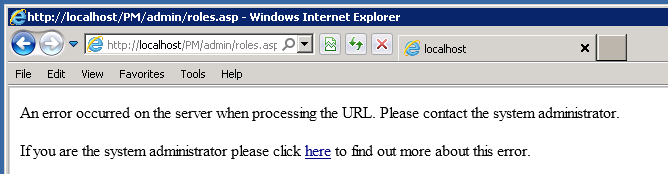
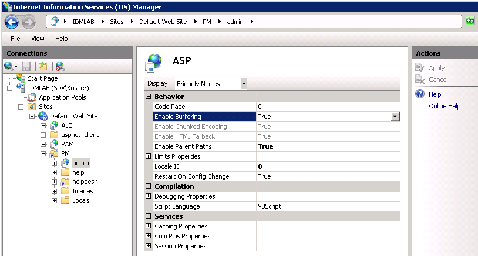
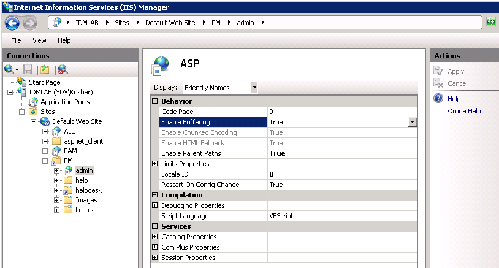

All pages on Administrative portals work except the Roles.
http://localhost/PM/admin/roles.asp
An error occurred on the server when processing the URL. Please contact the system
administrator. If you are the system administrator please click here to find out more about
this error.

This happens because of invalid IIS settings.
Please go to IIS manager Locate the web-site that is hosting the PM virtual directory Navigate to admin virtual directory Open ASP settings under IIS section.  Make sure that Enable Buffering is set to True.
This happens because of invalid IIS settings.
Please go to IIS manager Locate the web-site that is hosting the PM virtual directory Navigate to admin virtual directory Open ASP settings under IIS section.  Make sure that Enable Buffering is set to True.